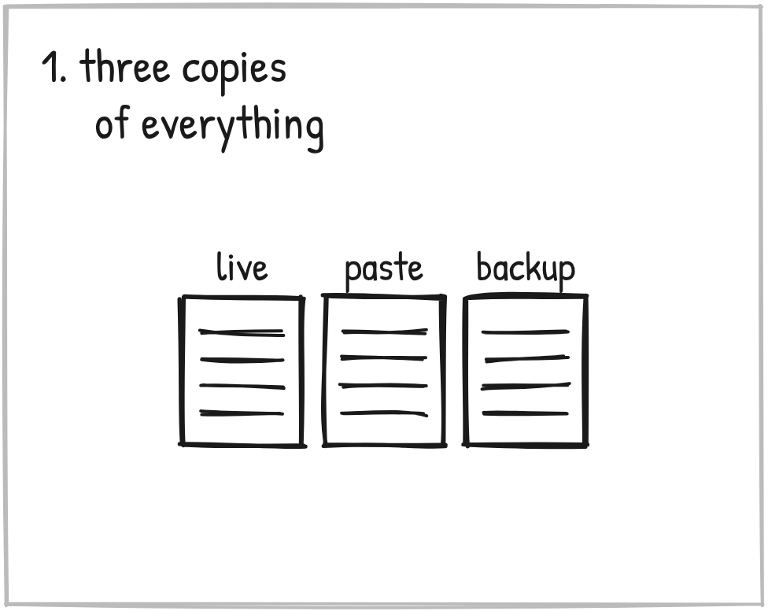
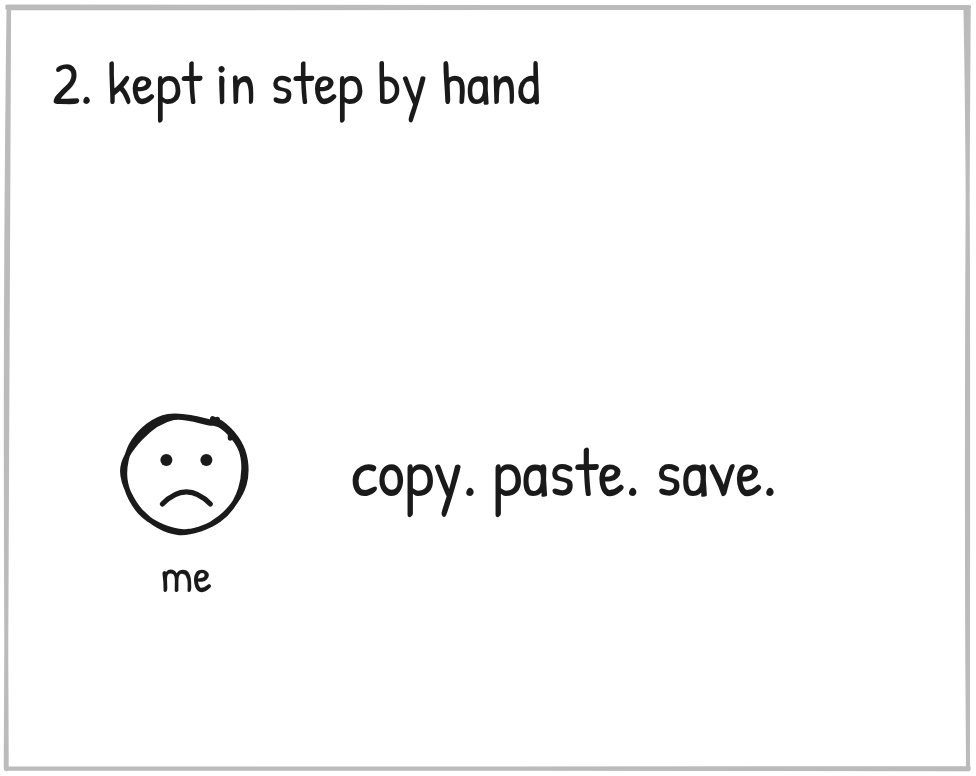
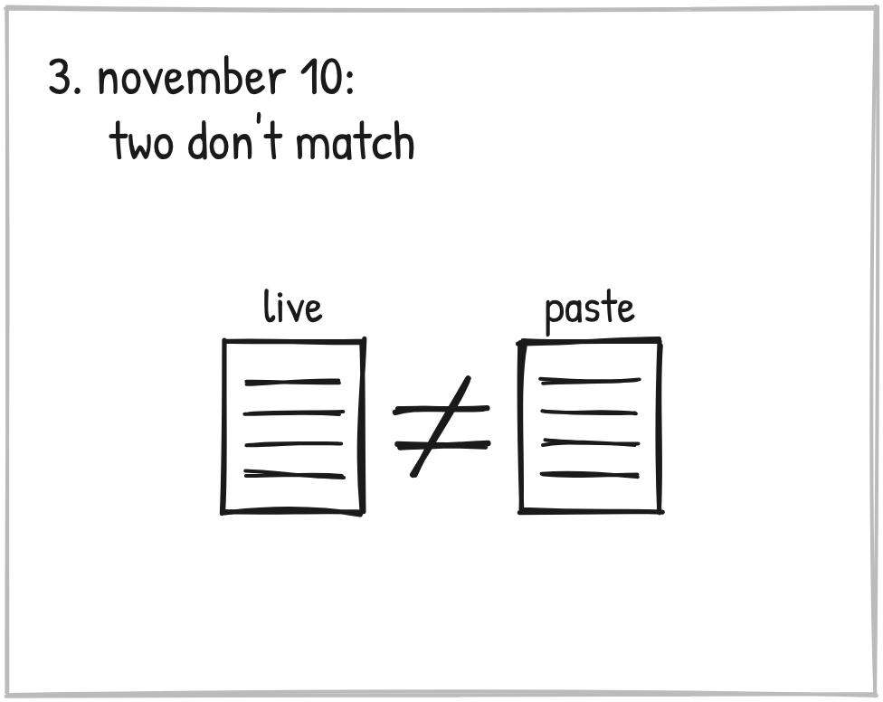
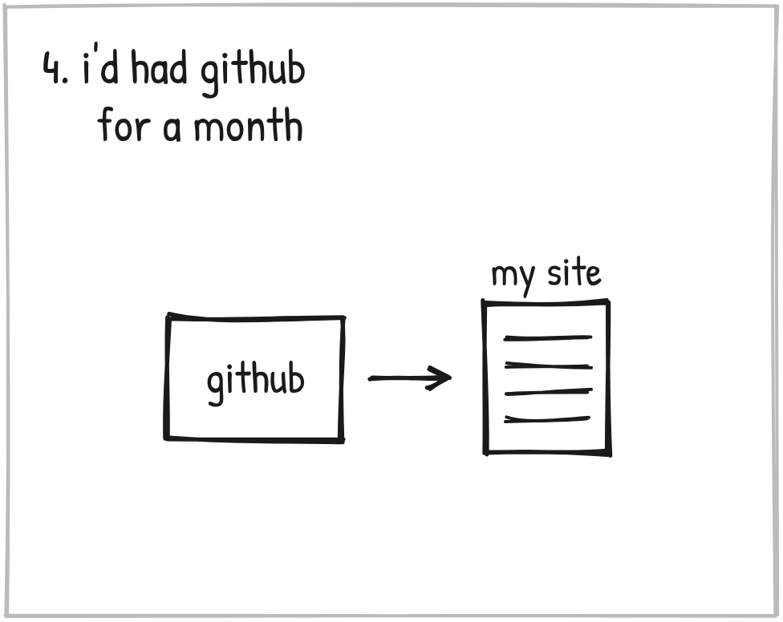
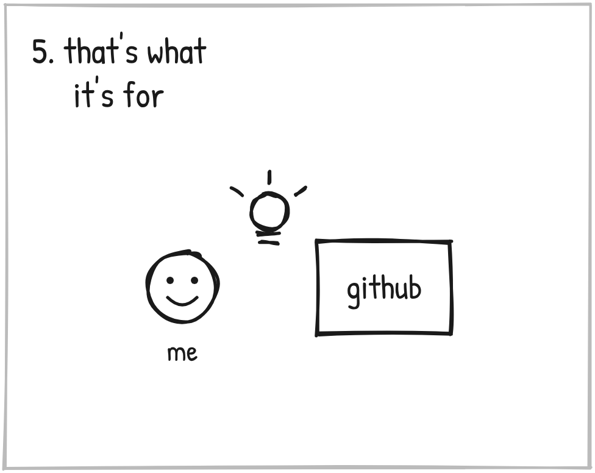
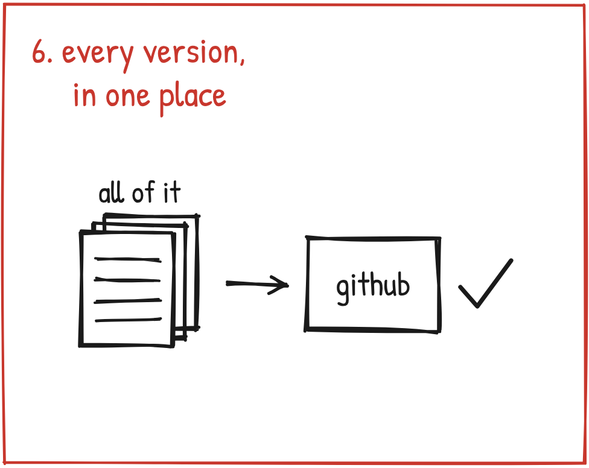

If you keep your AI's instructions in more than one place, this one's for you.

Every document that runs my AI lived in three places.
The live version, in a Claude document.
A copy I paste by hand into the project's settings. Claude can't write to that one, or even check it.
And backups in Google Drive.

Every change meant write it, copy it, paste it, save it again.
Three copies. One of me.

On November 10 I found out two of them didn't match. Each had been edited without the other.
It took a whole new version of my instructions just to merge them back into one.
Same day, another one.
About 95 percent of the improvements to how I work with Claude had been made in my marketing project. None of them had been carried back to the Master Prompt, which is what my other projects are built from.
More than three months of that.

And the whole time, I'd been using GitHub. Since October 9.
GitHub is where programmers keep their code, with every version saved.
I was using it to put pages up on my website.

Then it hit me what it does.
It keeps every version of a text file. In one place. With the history.
"That's what literally GitHub is for."
The fix is NOT always a new tool. Sometimes it's one you already use for something smaller.

So now my instructions, my governing documents and every skill live there as plain text.
Each new version of my instructions gets saved there in the same session, and Claude tells me which save it was. A sweep every night saves any skill that changed.
And the marketing rules got carried into the Master Prompt.
It's young. And it didn't replace the others. I still paste by hand when I work inside a project.
Mine was GitHub. What's yours?
Before you go looking for something new, ask what the tools you already use were built to do.
Three days later I went looking for the words that would move my AI.